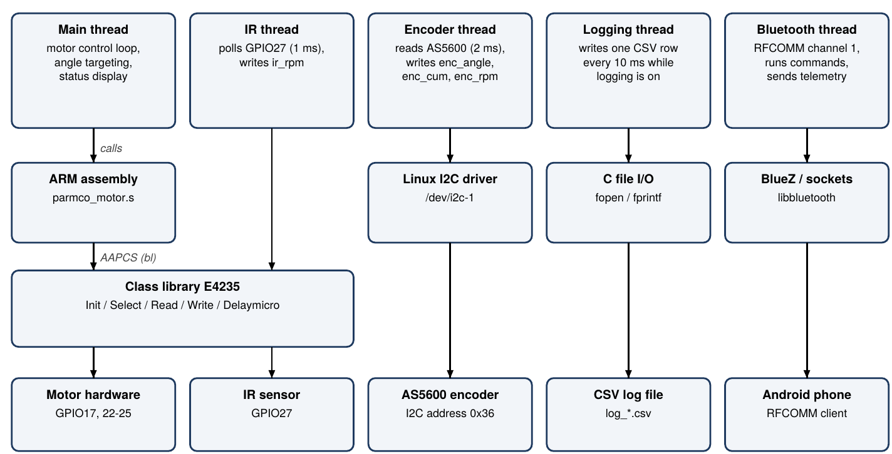

Software
One C program with a small ARM assembly file runs on the Pi. Five threads share the work, and the app is the only control input.

Source files
| File | Language | What it holds |
|---|---|---|
main.c | C | Bluetooth command server, motor control loop, angle targeting, AS5600 reading, IR RPM, CSV logging |
parmco_motor.s | ARMv7 assembly | enable_motor, step_motor and wait_and_step, which write the coil pins and wait between steps through the class library |
Commands from the app
The phone sends one text command per line. Several commands in one packet are each run in order.
| Message | Effect |
|---|---|
CMD:START | Enables the motor and runs it at the commanded RPM |
CMD:STOP | Disables the motor so the coils carry no current, and switches the over-range unlock off |
DIR:CW, DIR:CCW | Sets the direction |
CMD:FASTER, CMD:SLOWER | Changes the speed by 5%, held between 10 and 100 RPM unless unlocked |
RPM:<value> | Sets the commanded RPM; values below 10 are ignored |
UNLOCK:ON, UNLOCK:OFF | Over-range unlock (also OVERRANGE:ON and OFF) |
MODE:MANUAL, MODE:MAINTAIN | Stores the mode, which is written to the log |
CALIBRATE:ZERO | Stores the current encoder angle as zero |
SET:ZERO | Moves the blade to 0° using the encoder (needs calibration) |
ANGLE:<degrees> | Moves the blade to the angle by the shorter way (needs calibration) |
LOG:START, LOG:STOP | Starts and stops the CSV log |
Telemetry to the app
Every 0.15 s the Pi sends one line:
TEL:ir_rpm,enc_rpm,enc_angle,calibration,log_file,elapsed
TEL:20.1,19.8,123.4,Calibrated,log_2026-11-12_10-15-00.csv,12sAngle targets
While an angle target is active, each loop pass computes the error between the encoder angle and the target, wrapped to between −180° and +180° so the blade always takes the shorter way round. The step direction follows the sign of the error, the speed drops to 12 RPM inside 5° so the encoder keeps up, and when the error is within 0.9° (one half step) the Pi stops and disables the motor.
Log file
Each log is a CSV file named log_YYYY-MM-DD_HH-MM-SS.csv, written about every 10 ms.
| Column | Meaning |
|---|---|
| time_s | Seconds since logging started |
| mode | position during an angle move, otherwise Manual or Maintain |
| cmd_rpm, cmd_angle_deg | Commanded speed and angle target |
| step_count, step_angle_deg | Half steps commanded since calibrate zero, and that count times 0.9° |
| enc_angle_deg, enc_cum_deg | Encoder angle, and the same angle unwrapped past 360° |
| ir_rpm, enc_rpm, app_rpm | RPM from the IR sensor, from the encoder, and the value sent to the app |
| enable | 1 while the motor is enabled |
Libraries and attribution
| Library | Provider | Why it is needed |
|---|---|---|
| E4235 class library | ECSE 4235 instructor. Not written by AI. | All GPIO access goes through it, from C and from assembly |
| Linux I2C interface | Linux kernel | Reads the AS5600 angle over /dev/i2c-1 |
| BlueZ (libbluetooth) | BlueZ project, bluez.org | RFCOMM serial link to the Android app |
| POSIX threads, signals, system calls | glibc and Linux | Five threads, clean shutdown on Ctrl+C, non-blocking device and socket I/O |
| C math, time and standard library | glibc | Angle math, monotonic timing, log files and command parsing |
The software documentation explains how each library works. It is in the Checkpoint 3 software PDF.
Build and run
gcc -o parmco main.c parmco_motor.s -lbluetooth -lpthread -lmLink the class library the way the course instructions specify, and enable I2C on the Pi. The motor starts disabled, the program has no keyboard input, and Ctrl+C stops it with the motor disabled.
Code flags
Human changes to code are wrapped in [HUMAN EDIT START] and [END HUMAN EDIT] comments, with the AI original kept as a comment. Both source files were scanned and contain no such markers, so both are the unmodified AI original.